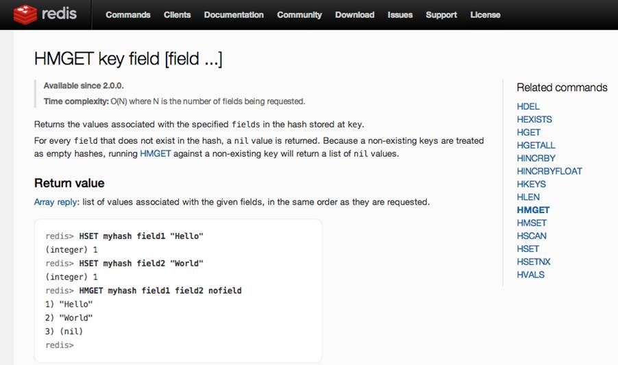

Devoxx France 2016 sample presentation
Nicolas Martignole @nmartognole
Zouheir Cadi @zouheircadi
Antonio Goncalves @agoncal
Welcome to Devoxx France
This is a template created inspired from Power Point template
Format 4/3
We love picture
We try to keep the Devoxx France logo and the Tweet hashtag on all slides
Roadmap
This is a slide without background images.
You must load and install 2 Fonts on your system :
- Montserrat
- Open Sans
Devoxx FR 2016 colors
main color, purple, #2a013b purple
secondary color, #b10142, dark pink
third color, smoke white #eeeeee white smoke
fourth color, dark purple #10001a dark purple
Show me some code !
Try to keep a font size as big as possible. Remember also that too much code on one slide is useless. The audience reads this texte and does not listen to your presentation anymore. Try to split on different slides your presentation.
Step 1 : add to Redis sorted set
127.0.0.1:6363[2]> zadd hackers 1953 "Richard Stallman"
(integer) 1
127.0.0.1:6363[2]>
127.0.0.1:6363[2]> zadd hackers 1969 "Linus"
(integer) 1
127.0.0.1:6363[2]> zadd hackers 1912 "Alan turing"
(integer) 1Step 2 : Show the list of Hackers
127.0.0.1:6363[2]> zadd hackers 1953 "Richard Stallman"
(integer) 1
127.0.0.1:6363[2]>
127.0.0.1:6363[2]> zadd hackers 1969 "Linus"
(integer) 1
127.0.0.1:6363[2]> zadd hackers 1912 "Alan turing"
(integer) 1
127.0.0.1:6363[2]> zrange hackers 0 -1
1) "Alan turing"
2) "Richard Stallman"
3) "Linus"Step 3 : Show the list with score
127.0.0.1:6363[2]> zadd hackers 1953 "Richard Stallman"
(integer) 1
127.0.0.1:6363[2]>
127.0.0.1:6363[2]> zadd hackers 1969 "Linus"
(integer) 1
127.0.0.1:6363[2]> zadd hackers 1912 "Alan turing"
(integer) 1
127.0.0.1:6363[2]> zrange hackers 0 -1
1) "Alan turing"
2) "Richard Stallman"
3) "Linus"
127.0.0.1:6363[2]> zrange hackers 0 -1 withscores
1) "Alan turing"
2) "1912"
3) "Richard Stallman"
4) "1953"
5) "Linus"
6) "1969"Step 4 : Last step with transparent code
127.0.0.1:6363[2]> zadd hackers 1953 "Richard Stallman"
(integer) 1
127.0.0.1:6363[2]>
127.0.0.1:6363[2]> zadd hackers 1969 "Linus"
(integer) 1
127.0.0.1:6363[2]> zadd hackers 1912 "Alan turing"
(integer) 1
127.0.0.1:6363[2]> zrange hackers 0 -1
1) "Alan turing"
2) "Richard Stallman"
3) "Linus"
127.0.0.1:6363[2]> zrange hackers 0 -1 withscores
1) "Alan turing"
2) "1912"
3) "Richard Stallman"
4) "1953"
5) "Linus"
6) "1969"
127.0.0.1:6363[2]> zrangebyscore hackers 1910 1940
1) "Alan turing"Live demo
Merci / Thanks you
This is not me
Devoxx France 2016 figures and numbers :188 speakers with a badge, 36 exhibitors
Less code is less bug
Why less slides is better than more slides
- Devoxx France 2016 runs on 3 days
- Audience loves live coding and demo
- Too much bullet points is super boring
- More text : less concentration from the audience that will just read your slides
- So this is exactly what you should not do
Pourquoi peu de diapositives c’est mieux
- Devoxx France 2016 se déroule sur 3 jours
- Le public préfère les démonstrations et l’écriture de code en direct
- Trop de points avec des puces c’est ennuyant
- Si vos slides peuvent vous remplacer, alors vous ne servez à rien comme orateur
- Imaginez que votre ensemble de diapos ne doivent pas pouvoir vivre sans vous, sans votre présentation et votre contenu
- Merci donc de ne PAS faire comme ce slide à mourir
Toujours plus d'image
- Les diagrammes dynamiques c’est vraiment top
Redis Set
TODO
Redis Set : French Selected Speakers
TODO
Screen capture
- Here are just a few photos from Devoxx France 2015 so that you get a better idea of what you’re about to live
- Voici quelques photos de Devoxx France 2016 afin de vous donner une idée de ce que vous vous apprêtez à vivre...


Thanks
Contribute and propose other templates on https://bitbucket.org/nicolas_martignole/devoxxfr_2016_templates/overview
#DevoxxFR